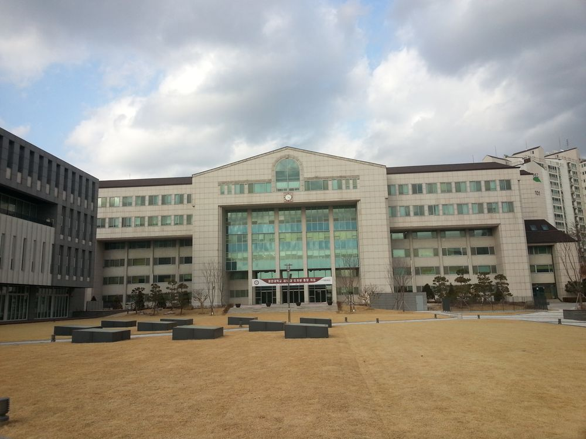

화도관

관련 학과, 시설
대학본부, 건축학과, 건축공학과
건물 층수
지하 1층, 지상 6층
B1F
기계실, 변전실
1F
행정사무실
2F
3F
강의실
4F
5F
교수연구실
6F
흔히 학교 사진에서 나오는 비마상
뒤로 나오는 건물이 이 건물이다.
입학증명서 혹은 재학증명서 등의 서류부터
수험응시생들의 입학상담, 창업 관련 문의 등등
필요하다싶으면 화도관으로 가는 것이 맞다.
SKY캐슬의 촬영지로도 사용됐다.